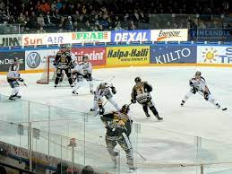

El hockey es uno de los deportes competitivos más antiguos de la historia de la humanidad, y aunque la fecha exacta del origen del juego es desconocida, ya 4000 años atrás, en tumbas faraónicas en el Valle del Nilo, en Egipto, aparecen figuras de hombres practicando este deporte. El deporte tal cuál ahora lo practicamos se desarrolló en Inglaterra a mediados del siglo19. Como en otros deportes, fue el Ejército Británico el que introdujo el juego en la India y en otras colonias Británicas, jugandose la primer competencia Internacional en 1895. En nuestro país el deporte ingresó en a principios del siglo 20 de la mano también de ciudadanos Ingleses, jugandose en los clubes que los nucleaba, hasta que en 1908 se jugaron los primeros partidos entre Belgrano Athletic, San Isidro Club y Pacific Railways (hoy San Martín) y en el mismo año se formó la Asociación Argentina de Hockey, siendo su primer presidente Thomas Bell. En 1909 la Asociación de Hockey decidió permitir la afiliación de conjuntos de damas. Apareció un nuevo equipo, también de Belgrano, llamado Belgrano Ladies (damas). Su primer partido fue el 25 de agosto frente al colegio St. Catherine's, ganando éste por 1 a 0. A nivel país, a fines de la década del 60 solo tres entidades aglutinaban el hockey nacional: Asociación Argentina, Asociación del Litoral y Federación Cordobesa. En el mes de junio de 1968 se realiza en Rosario el Primer Congreso Argentino de Hockey adonde se resuelve realizar anualmente el Campeonato Argentino. En julio de 1972 se realiza el Segundo Congreso Nacional, coincidente con el IV Torneo de la República para Damas Mayores, en el cuál participaban 5 asociaciones. El 16 de Agosto de 1981 en Mendoza, representantes de las Asociaciones de Santa Fe, Tucumán, Litoral, Mendoza, Córdoba, Tandil y Buenos Aires, dejan constituido el Consejo Federal de la República Argentina. El 19 de junio de 1983, en la ciudad de San Miguel de Tucumán, con la presencia de representantes de 12 Asociaciones, se funda la Confederación Argentina de Hockey sobre Césped y Pista, con domicilio legal en la ciudad de Buenos Aires, definiendose además que por un plazo de 10 años la representación Internacional continuaría a cargo de la Asociación Argentina.
El hockey sobre hielo es un deporte que se juega entre 2 equipos de 6 jugadores (un portero con 5 jugadores en el hielo) con patines sobre una pista de hielo. Los patinadores deben dirigir un disco de caucho con un bastón largo para tratar de anotar en la portería del rival. Al final, el equipo que más goles ha marcado gana. Esta variante del hockey se caracteriza por ser un deporte físico; los jugadores pueden realizar cargas con el cuerpo sobre el rival para tratar de arrebatarle el control del puck, por lo que suelen ir equipados con toda clase de protecciones. Es también uno de los juegos más rápidos, debido a que la fricción del disco y los patines sobre el hielo es mínima, y uno de los pocos deportes que permiten realizar cambios de jugadores de forma ilimitada y sin necesidad de interrumpir el juego. Se inventó a finales del siglo XIX en Canadá, donde es el deporte nacional. Además, también goza de bastante popularidad en Estados Unidos, Europa Central, Escandinavia, Finlandia y Rusia, e incluso está considerado como la principal variante de hockey en países del hemisferio norte con climas fríos. Su principal órgano rector a nivel internacional es la Federación Internacional de Hockey sobre Hielo.

El 6 de marzo de 1875 fue la primera vez que se disputó un partido en pista cubierta en la ciudad de Montreal,3 y en 1877 varios estudiantes de la Universidad McGill deciden redactar el primer reglamento de hockey sobre hielo.4 Entre otras normas, se estableció que cada equipo debía tener en la pista a nueve jugadores, y la pelota pasó a ser sustituida por un puck cuadrado de madera, que después evolucionó al disco actual. Dicha institución fundó ese mismo año el primer equipo de hockey, el McGill University Hockey Club,5 seguidos de Montreal Victorias. En Europa, los primeros equipos surgieron en Inglaterra por parte de las universidades de Oxford y Cambridge
Su expansión a los Estados Unidos data de 1893, cuando la Universidad de Yale disputó el primer partido ante la Universidad Johns Hopkins. El primer campeonato aficionado del país fue la U.S. Amateur Hockey League en 1896, mientras que el primer club profesional fue Portage Lake (Houghton, Míchigan) en 1902. Un año después se creó la primera liga profesional, la Pro Hockey League, entre equipos de Canadá y Estados Unidos. Este campeonato rebajó el número de jugadores en pista por equipo de nueve a los seis actuales. En 1909 se produjo la fundación del equipo de hockey más antiguo de la historia aún existente: los Canadiens de Montréal. La National Hockey Association, uno de los primeros intentos de establecer un campeonato profesional regular, se fundó en 1910 y duró siete temporadas, mientras que de forma paralela surgió la Pacific Coast Hockey Association, que incluía equipos de Estados Unidos y duró hasta 1924.14 No fue hasta el 26 de noviembre de 1917 cuando se crea, a partir de la desaparición de la NHA, la primera liga profesional estable, la National Hockey League. Este campeonato se impuso sobre el resto, y hoy en día es la principal liga en Norteamérica de este deporte, siendo además considerada como la principal liga profesional del mundo. En un principio solo estaba compuesta por clubes canadienses, y los equipos pioneros fueron Montreal Canadiens, Montreal Wanderers, Ottawa Senators, Quebec Bulldogs y Toronto Arenas. En 1924 llegó el primer equipo de Estados Unidos, los Boston Bruins.

Su expansión a los Estados Unidos data de 1893, cuando la Universidad de Yale disputó el primer partido ante la Universidad Johns Hopkins. El primer campeonato aficionado del país fue la U.S. Amateur Hockey League en 1896, mientras que el primer club profesional fue Portage Lake (Houghton, Míchigan) en 1902. Un año después se creó la primera liga profesional, la Pro Hockey League, entre equipos de Canadá y Estados Unidos. Este campeonato rebajó el número de jugadores en pista por equipo de nueve a los seis actuales. En 1909 se produjo la fundación del equipo de hockey más antiguo de la historia aún existente: los Canadiens de Montréal. La National Hockey Association, uno de los primeros intentos de establecer un campeonato profesional regular, se fundó en 1910 y duró siete temporadas, mientras que de forma paralela surgió la Pacific Coast Hockey Association, que incluía equipos de Estados Unidos y duró hasta 1924. No fue hasta el 26 de noviembre de 1917 cuando se crea, a partir de la desaparición de la NHA, la primera liga profesional estable, la National Hockey League.15 Este campeonato se impuso sobre el resto, y hoy en día es la principal liga en Norteamérica de este deporte, siendo además considerada como la principal liga profesional del mundo. En un principio solo estaba compuesta por clubes canadienses, y los equipos pioneros fueron Montreal Canadiens, Montreal Wanderers, Ottawa Senators, Quebec Bulldogs y Toronto Arenas. En 1924 llegó el primer equipo de Estados Unidos, los Boston Bruins.